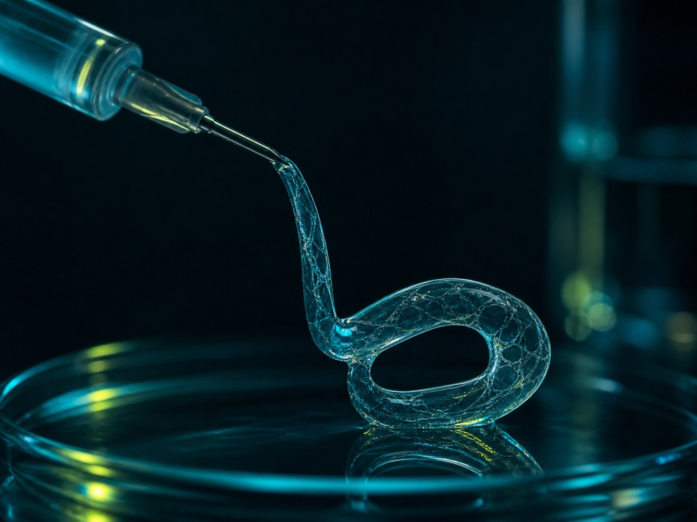
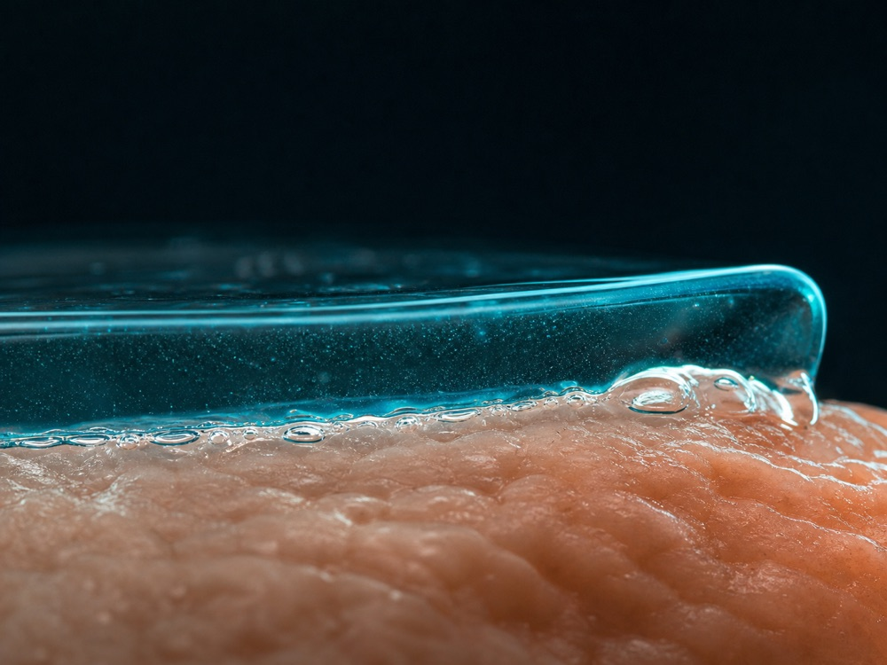
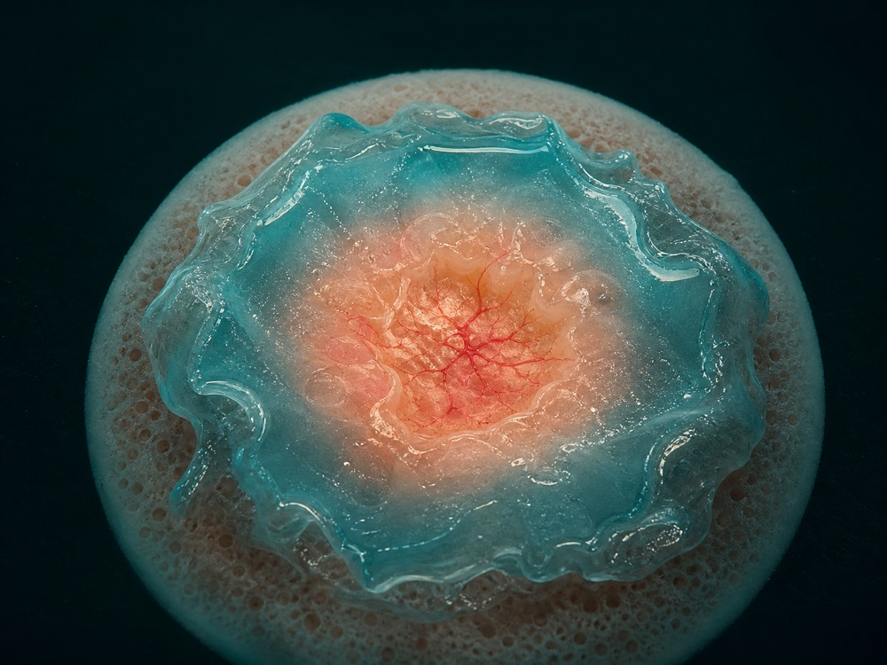

R / 01Network

Injectable hydrogel mechanics
Tough, self-healing, and adaptable networks that preserve practical injectability while improving mechanical performance.
Biomaterials researcher / Technology leader
I develop injectable and adhesive hydrogel technologies that connect molecular design with clinical use, quality systems, and commercial translation.
Soft matter / dynamic networks / tissue interfaces
My work sits at the interface of polymer chemistry, biomedical engineering, and translation. The central question is simple: how do we make a hydrogel perform under real biological and operational constraints—not only in an idealised test?
From network architecture and tissue adhesion to manufacturing logic, evidence packages, and quality systems, I connect material performance with the path required to make it useful.
002 — Research platform
A focused platform built around programmable hydrogel networks, demanding tissue interfaces, and clinically relevant repair environments.

Tough, self-healing, and adaptable networks that preserve practical injectability while improving mechanical performance.

Cohesion–adhesion balanced materials for wet, moving, and biologically complex surfaces where conventional adhesives struggle.

Injectable and self-healing systems for antibacterial treatment, therapeutic delivery, and difficult-to-heal tissue environments.
003 — Application modes
By tuning network chemistry, mechanics, degradation, and payload–matrix interactions, an injectable hydrogel platform may be adapted for distinct delivery, filling, and scaffold-forming applications.
Explore four design directions ↓A modular design space — not a one-formulation-fits-all claim.
Network chemistry can be tuned to load and locally release molecular cargo. Release behaviour depends on payload–matrix interactions and degradation.
A hydrated three-dimensional microenvironment may support cell handling and local placement; compatibility and function remain formulation- and protocol-dependent.
A potential formulation direction for injectable volume restoration and shape retention, subject to indication-specific safety, biocompatibility, and regulatory evidence.
Injectable placement followed by in situ network formation may enable conformal space filling and tissue-supporting scaffold architectures.
Application modes shown here are design and translational directions. Suitability for any intended use requires formulation-specific performance, safety, biocompatibility, and regulatory evidence.
004 — Selected work
A thiol-rich hydrogel combining physical barrier function with microenvironmental regulation for endometrial regeneration and fertility restoration.
A framework–flexible chain strategy for toughness without sacrificing injectability.
A design principle for improving wet adhesion through balanced bulk and interface performance.
005 — Translation
A promising chemistry is only the beginning. I work across the chain that turns material performance into a credible translational proposition.
006 — Connect
Open to research collaborations, translational biomaterials projects, technology partnerships, and selected academic or industry opportunities.